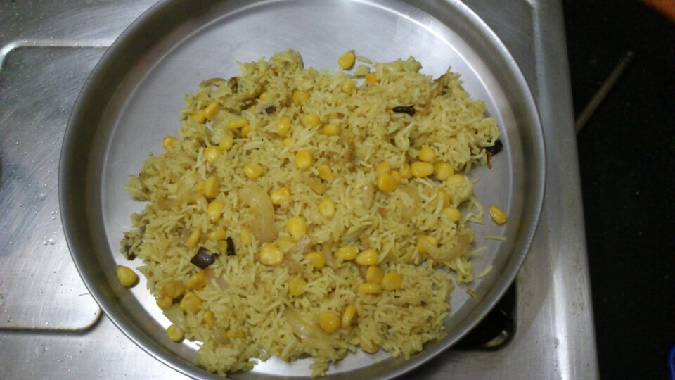

Image by Ashok Kumar P S - Wikimedia Commons - CC-BY-SA-4.0
Arroz con maiz(Rice with corn)
Rice with corn is a very popular side dish in Cuba. In fact, corn is added to many dishes because it is a vegetable with an exquisite flavor and numerous beneficial properties.
Ingredients
- 2 lb rice
- 1 ½ cups corn kernels
- 1 small onion
- 3 cloves of garlic
- ½ chili pepper
- 6 cups water
- 1 teaspoon salt
- 1 teaspoon vinegar
- ¼ teaspoon cumin
- ¼ teaspoon pepper
- 3 tablespoons oil
- ½ cup tomato sauce
Instructions
- Pour two spoonfuls of oil into a pot; add the water, spices, tomato, and chicken bouillon cubes, and cook over high heat until boiling.
- Add the rice and stir well with a fork.
- Once it starts to boil, lower the heat and cook over medium heat, tightly covered, until the rice is tender.
- Then, add the pre-cooked corn, cover, and cook for a few more minutes.
- Finally, add a clove of finely crushed garlic and stir.
Home